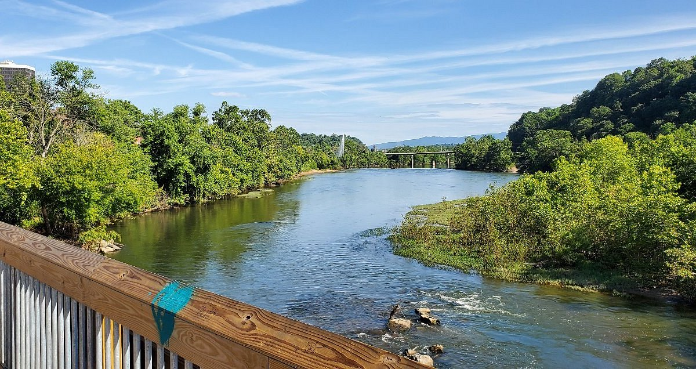

Blackwater Creek Trail
Blackwater Creek Trail is a popular recreational trail in Lynchburg. It follows Blackwater Creek through a wooded natural area while remaining close to the city.
The trail can be used for walking, running, biking, and enjoying the scenery. It is also connected to other trails in Lynchburg's larger trail system.
Percival's Island

Percival's Island is located along the James River and provides an opportunity to explore the area surrounding the river. The trail is popular with people who enjoy walking, biking, and spending time outdoors.
The area also provides views of the river and surrounding natural scenery, making it an interesting place to visit while exploring Lynchburg.
Other Trails to Explore
Alpine Trail
Alpine Trail is located in Riverside Park. It travels through a wooded area and includes steeper sections.
Creekside Trail
Creekside Trail follows Blackwater Creek and provides a more natural trail experience through wooded surroundings.
Ivy Creek Greenway
Ivy Creek Greenway provides a paved path through the Peaks View Park area and can be used for walking, running, and biking.
What to Bring
Being prepared can make a hike more comfortable and enjoyable. Consider bringing the following items:
- Water
- Comfortable hiking shoes
- Weather-appropriate clothing
- Phone or map for navigation
- Snacks for longer hikes
- Sunscreen
Hiking Tips
- Check the weather before starting your hike.
- Choose a trail that matches your experience level.
- Bring enough water for the length of your hike.
- Stay on designated trails.
- Respect plants, wildlife, and other trail users.
Back to the Home Page
Want to learn more about hiking in Lynchburg? Return to the home page to read about the benefits of hiking and how to prepare for a trail.
Return to Home Page